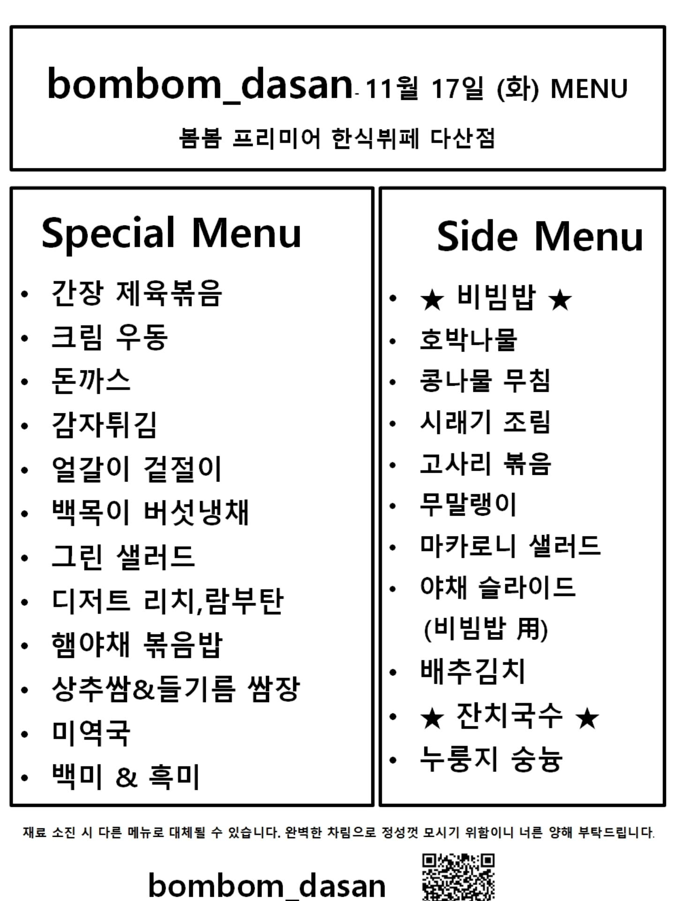
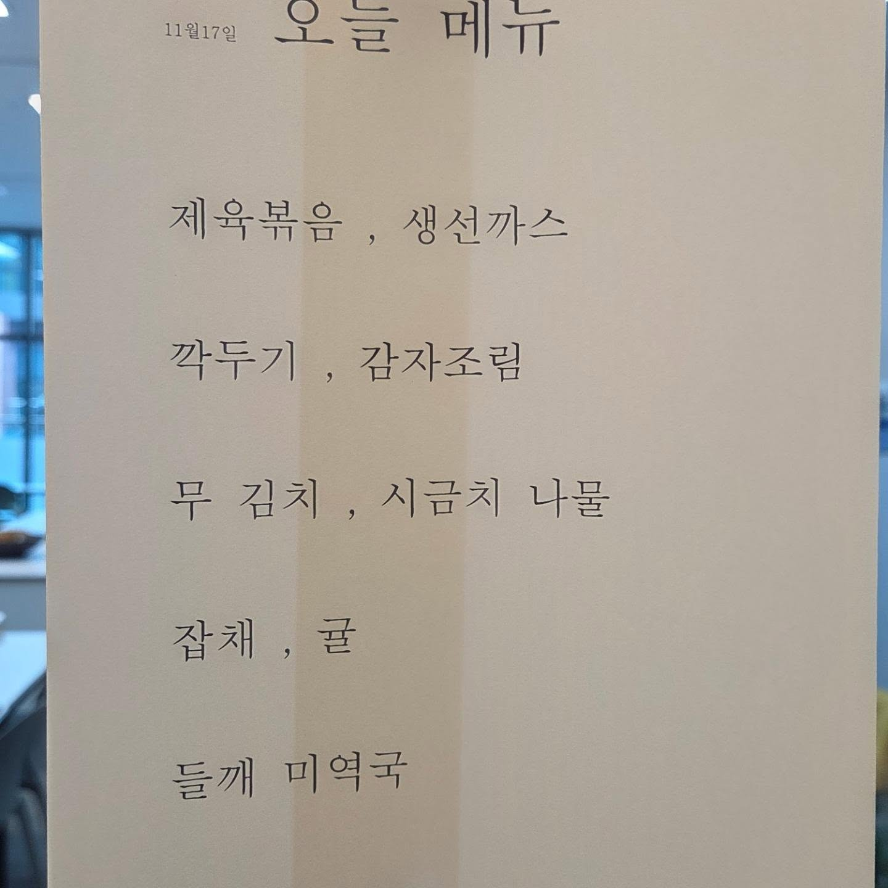
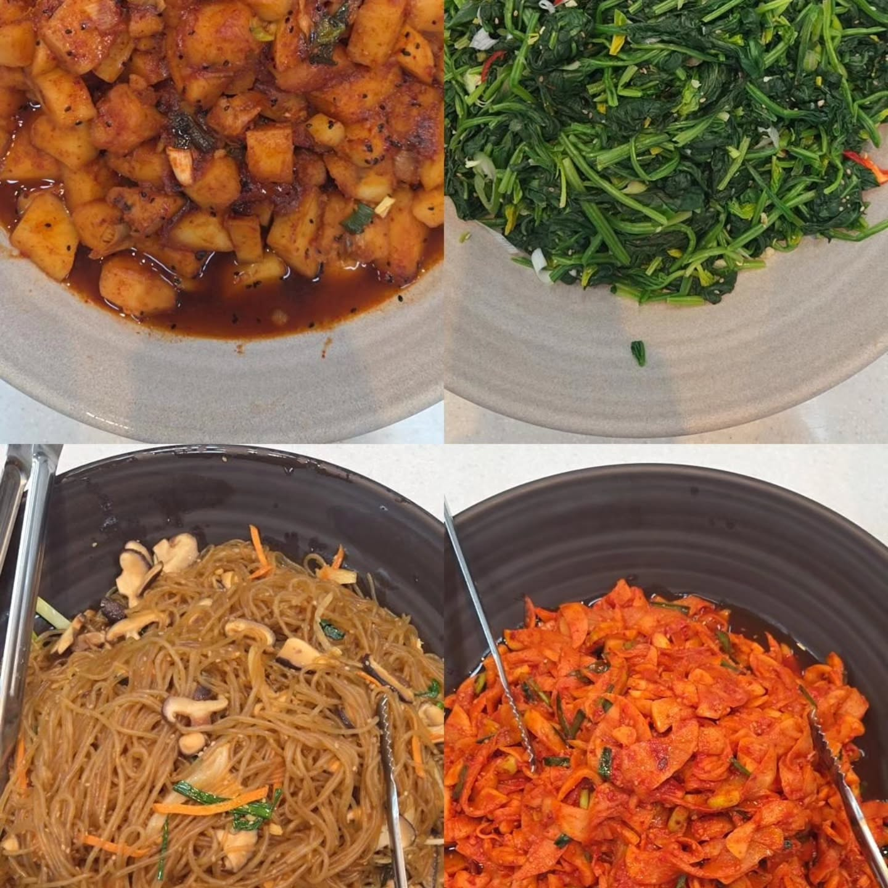
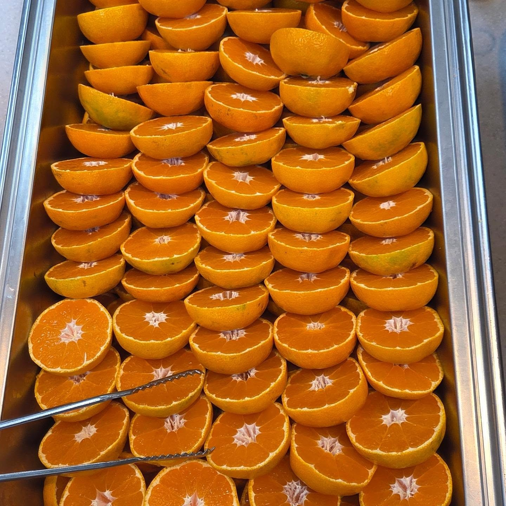
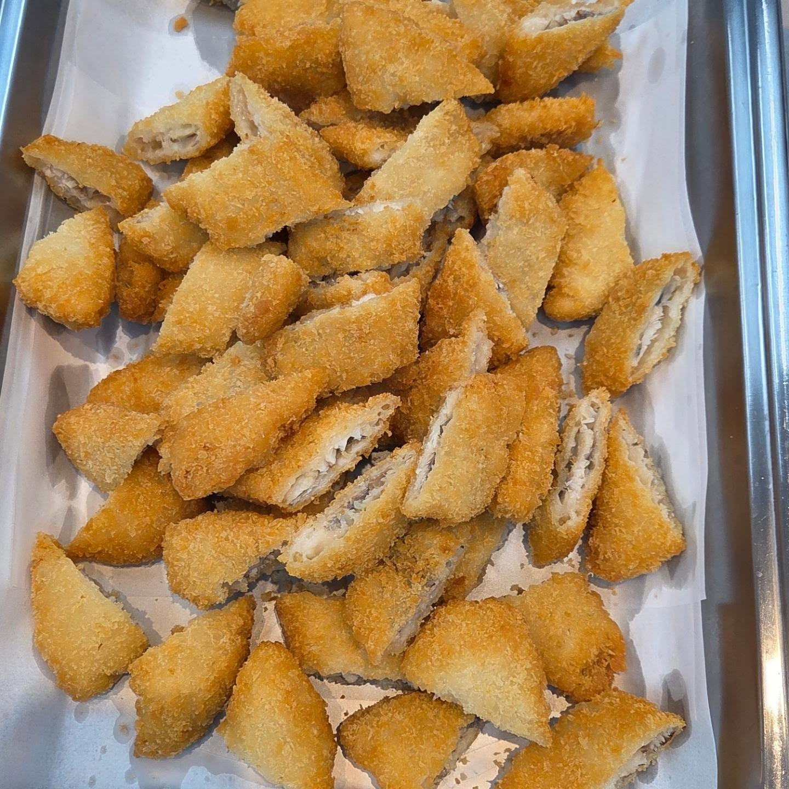
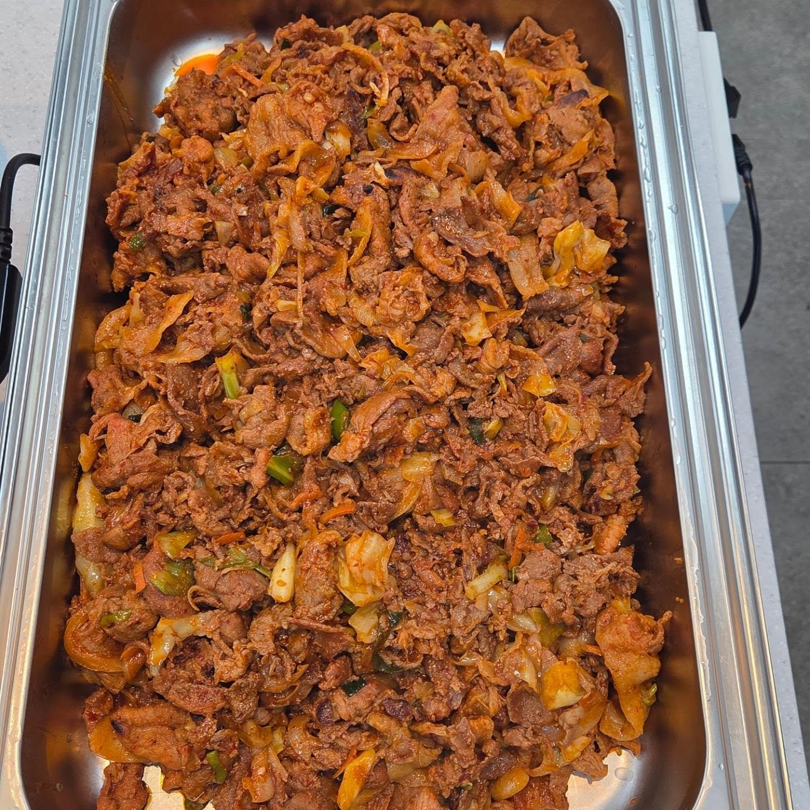

봄봄 식당

- bombom_dasan 11월 17일 (화) MENU
- 봄봄 프리미어 한식부페 다산점
- Special Menu Side Menu
- 간장 제육볶음
- 크림 우동 호박나물
- 돈까스 콩나물 무침
- 감자튀김 시래기 조림
- 얼갈이 걷절이 고사리 볶음
- 백목이 버섯냉채 무말램이
- 마카로니 실러드
- 야채 슬라이드
- 햄야채 볶음밥
- 배추김치
- 미역국 잔치국수
- 백미 & 흑미
- 재료 소진 시 다른 메뉴로 대체월 수 있습니다. 완벽한 차림으로 정성껏 모시기 위험이니 너른 양해 부탁드립니다
- bombom dasan
더 푸드 플러스

- 더 푸드 플러스
- -C동 2층 201호-
- 11월 17일 (화)
- 그런실러드
- 함박스레이크 7치
- 잡곡밥
- 각종 냄라면
- 계란후라이
- 딸기짐 샌드위치
- 콩나물무침
- 왕태무계란국
- 화 금 생맥주(1인1잔)
- 양껏드세요 ~
밥생각




